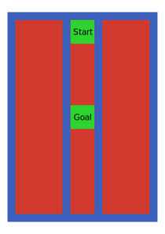

Marble Game - Assignment 1
Deadline: 14th November 2022 - 23:59
Updates
- Deadline was changed to 14th November 2022 - 23:59
- The implementation of CMACS have been delayed to the 2nd assignment.
Introduction
The goal of this assignment is to demonstrate your ability to control the position and orientation of the hip of your leg.
You will demonstrate the control using a marble game.
Challenge 1: Open-Loop Control of the Two-Dimensional Marble Game
In this challenge, we will first demonstrate the ability to control the movement of the hip.
After constructing your leg assembly, add a two dimensional maze at the hip of your robot. The size of the maze should be 11cm by 15cm. The goal is to roll a golf or table tennis ball from the Start position to the Goal position.
The walls of your maze should be about 1cm tall. For a greater challenge, you can lower the height of the walls, especially the external walls. Then you have to carefully control the speed of the ball, since it will otherwise jump out of the maze.
|
|
Possible leg assembly with the maze attached | Two dimensional marble maze |


Servo Control
First implement a program on the Raspberry PI to demonstrate control of the four RC servos.
Identify the maximum angles and home positions of your servos.
Make sure that you keep your leg assembly light, so that you can move the hip given the RC servos.
Remote Control
Implement an application on the Raspberry PI to control the leg that you constructed.
Your application should be able to:
-
change the angles of each of the four servos
-
control the position and orientation of the hip of your leg
You can use a combination of keyboard, mouse, touchscreen, or joystick to control your leg.
Use manual control to move the ball from the Start position to the Goal position.
Camera Feedback
Mount the camera of the Raspberry PI so that you can watch your leg assembly and the ball.
Implement a program for the camera. I suggest a simple blob/color detector to estimate the position of the ball and angle of the hip of your leg.
PID Control
Implement and tune a PID controller to try and balance the ball on the track, so that it holds its position near the center of the playing field.
Challenge 2: Closed Loop Control of the One-Dimensional Marble Game
In this part of the challenge, we will simplify the maze to a single rail, which runs from the front to the back of your maze.
 |
A maze with a single rail for experiments in feedback control. |
Challenge 3: Closed Loop Control of the Two-Dimensional Marble Game
In the third challenge, we extend our work to control the ball to balance on a plane in two dimensions.
The maze is empty inside. The Start is at the top left and the goal is center of the playing field.
Camera
Modify your camera setup and vision application to estimate the position on the top of the plane.
PID Control
Add and tune an additional PID controller so that you can balance on the plane.
A maze with a single rail for experiments in feedback control. |
Honesty declaration
By submitting an assignment, you claim that your submission is only your own work. This means that you have developed the design, implemented the code, run the experiments, and all other work necessary to complete the assignment by yourself.
If you discussed your work with other students or used sources on the Internet, then you must say so clearly at the beginning of the assignment.
You can discuss parts of the assignment with others, but these discussions must be limited to sharing ideas on a whiteboard or notepad. If you exchange code/programs/designs or exchange any material via the Internet, then you must say so in your honesty declaration.
Fill out the Honesty Declaration and add any external sources that you used during the assignment.
Submissions
This assignment must be done in groups of maximal two students.
If you use information or code that is not your own (e.g., sample code from the Internet, ideas for new features from a classmate, etc.), then you must specify this in your assignment write-up. Failure to disclose that you used external sources will lead to disciplinary actions.
To hand in your assignment:
- Create a directory to hold all of your data. The directory name should be <student id>_a<number>, where <student id> is your student id and <number> is the number of the assignment,
- Create a directory source inside of the directory <student id>_a<number>.
- Put the source code, which may contain of multiple files, for your assignment’s solution into the directory source.
- Your prg\ram must compile by just running the command make in the source directory or a similar step for your programming language of choice.
- Write a README file to explain anything you feel is necessary or important about your submission. This may include special features/bugs of your program. Describe what parts of the assignment you implemented. It is in your interest to simplify the job of the marker.